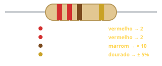
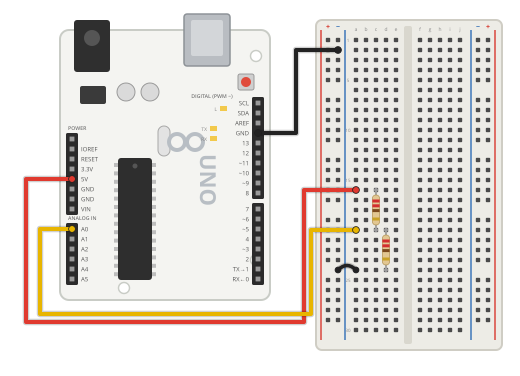

O que é um Resistor?
O resistor limita a corrente elétrica em um circuito. Ao ser percorrido pela corrente, ele converte parte da energia elétrica em calor e provoca uma queda de tensão. Sua resistência é medida em ohms (Ω) e indicada por faixas coloridas no corpo. Nesta oficina usamos resistores de 220 Ω para proteger os LEDs.
Código de cores
Como funciona
O resistor dificulta a passagem da corrente elétrica. Quanto maior a resistência, menor a corrente para uma mesma tensão. Essa relação é a 1ª Lei de Ohm: V = R · I.
Ao ser percorrido pela corrente, o resistor transforma parte da energia elétrica em calor (efeito Joule) e “fica” com uma parte da tensão do circuito. É assim que ele protege o LED.
O valor é indicado por faixas coloridas: as duas primeiras são algarismos, a terceira é o multiplicador e a última, separada, é a tolerância.


Tipos
Filme de carbono
O mais comum e barato, com tolerância de 5% (faixa dourada).
Filme metálico
Mais preciso (1%), normalmente com 5 faixas.
SMD
Minúsculo, soldado direto na superfície das placas, como no próprio Arduino.
De potência
Corpo maior, de cerâmica, para correntes e potências altas.
Ficha técnica
- Unidade: ohm (Ω); 1 kΩ = 1 000 Ω
- 220 Ω: vermelho · vermelho · marrom · dourado
- 10 kΩ: marrom · preto · laranja · dourado
- 1 kΩ: marrom · preto · vermelho · dourado
- Potência típica dos resistores de kit: 1/4 W
- Não tem polaridade: pode ser ligado em qualquer sentido
Montagem dos componentes

Divisor de tensão: dois resistores de 220 Ω em série entre 5V e GND. O ponto do meio vai ao A0.
Você vai precisar de
- 1× Arduino Uno R3 + cabo USB
- 1× Protoboard
- 2× Resistores de 220 Ω
- 4× Jumpers macho-macho
Ligações
| 5V | Primeiro resistor (R1) |
|---|---|
| Ponto entre R1 e R2 | A0 |
| Segundo resistor (R2) | Trilha (−) |
| GND | Trilha (−) |
#< código exemplo >
Abra o Monitor Serial (9600). Como os dois resistores são iguais, cada um fica com metade da tensão: o valor medido deve ficar perto de 2,5 V. Experimente trocar um deles por 10 kΩ e explique o novo valor.
/*
Oficina de Robótica SELFÍS — Componente: Resistor
Exemplo: divisor de tensão com dois resistores de 220 ohms em série.
Ligações: 5V -> R1 -> ponto do meio -> R2 -> GND | ponto do meio -> A0
Resultado esperado: cerca de 2,5 V no ponto do meio (metade de 5 V).
*/
void setup() {
Serial.begin(9600); // abre o Monitor Serial
}
void loop() {
int leitura = analogRead(A0); // 0 a 1023
float tensao = leitura * (5.0 / 1023.0); // converte para volts
Serial.print("Leitura: ");
Serial.print(leitura);
Serial.print(" | Tensao no ponto do meio: ");
Serial.print(tensao, 2);
Serial.println(" V");
delay(500);
}
💡 Teste primeiro no Tinkercad (Circuitos → Código → Texto → cole o código → Iniciar simulação). Depois carregue na placa real pela Arduino IDE.